The feel
Afrofuturism imagines the future from African and diasporic culture: The Met calls it a creative mode that centres Black imagination, excellence and self-determination,1 and Ryan Coogler, who directed Black Panther, calls it "a way to bridge the cultural aspects of the ancient African traditions with the potential of the future".2 Hannah Beachler, who designed the film's Wakanda, describes the result as "a mixture of tradition and futurism side by side", a culture that developed its own look without colonisation.3
It looks back to go forward, like the Akan sankofa bird, drawn with its neck turned backward to stand for learning from the past.2 The scholar Ytasha Womack says that in Afrofuturism "time is treated as nonlinear".4 Bright colour can carry grief: Tales of Kenzera: ZAU is vivid because, as its art lead Ackeem Durrant explains, Bantu funerals pair many colours to mourn someone and celebrate a life.5 Nnedi Okorafor's africanfuturism, rooted first in Africa, is interested in technology, leaves the Earth and skews optimistic.6
- rooted
- saturated
- patterned
- ancestral
- optimistic
- cosmic
Where it comes from
The critic Mark Dery coined the word in his 1993 essay "Black to the Future", for speculative fiction that treats African-American themes in the context of twentieth-century technoculture.7 The ideas are older: W. E. B. Du Bois published his post-apocalyptic story "The Comet" in the 1920s,2 Sun Ra, who never heard the word,8 told people he came from Saturn by way of Egypt,9 and George Clinton used Parliament-Funkadelic's Mothership as a stage prop in the 1970s, a vehicle to an imagined Black utopia.2 In 2019 the Nigerian-American writer Nnedi Okorafor defined africanfuturism, rooted first in African culture, history and mythology and not centred on the West.6 Black Panther (2018) is perhaps its most recognisable work,2 and games have followed: Tales of Kenzera: ZAU from Abubakar Salim, a British actor of Kenyan descent,10 and Relooted, which imagines parts of Johannesburg in the future.11
Core elements
Named peoples and places
Each design starts from specific peoples, not from Africa in general, which, as Nnedi Okorafor puts it, "is not a country, it's a diverse continent".6 Ruth E. Carter's Black Panther costumes were researched "one tribe, one region, and their lifestyle",12 and Tales of Kenzera began from Ndebele and Zulu art before moving on to Tswana and other Bantu styles, and to Maasai art.13
Tradition beside high technology
Old and new forms share the frame. Hannah Beachler's Wakanda puts a Timbuktu pyramid from Mali next to a glass skyscraper with a rondavel top,3 and Tales of Kenzera pairs Amani, a coastal city of tech in 2089, with a land of myth.5 Adinkra cloth already does this: symbols for UAC lights, the Benz and television record technological change in Asante society.14
Woven and stamped pattern
Cloth supplies the surfaces. Kente is woven in narrow strips about 3 to 5 inches wide, and several are sewn together into a wider cloth;15 Asante adinkra is stamped symbol by symbol into a ruled grid;16 and Bamana mudcloth leaves its motifs unpainted in a ground of black clay.17 Iwájú's future Lagos carries African patterns into its architecture as well as its clothing.18
One saturated colour per group
Black Panther kept a strict palette, black for the royal family, vibrant red for the Dora Milaje and green for the spy Nakia, and Ruth E. Carter found that a specific, saturated palette helped tie each look to a tribe.12 Iwájú gives a tycoon's own technology a purple hue and a crime boss's bootleg tech a scratchy blue.18
Technology modelled on nature
Wakanda's technology is biomimetic: Beachler asked what a plant or animal offers, or how it defends itself, and turned that into technology.3 Iwájú's robot pet is an agama lizard, because one looks at home anywhere in Lagos and says Nigeria at a glance,19 and its eyes, looked at closely, are lenses.18
Sun, moon and space imagery
Sun Ra's work tied Black experience to outer space and brought in Egyptian and African motifs.9 Zau's Sun and Moon masks come from Bantu cultures in which the sun and moon represent life and death,13 and Ytasha Womack points to African cosmologies, from the Dagara to the Yoruba, whose art and architecture show them to be interdimensional.4
How to do it
Research one people at a time
Start with the people who live in the place: Hannah Beachler enters every design through the people who inhabit its spaces.20 For Wakanda she researched "the countries, tribes, languages, geography, economics, trade, militaries, conflicts", before colonisation and through time,20 and her design bible ran to about 500 pages of pictures, timelines and traditions.3 Ruth E. Carter's team chose twelve tribes, studied each one's jewellery and colour palette, and read texts as well as photographs to learn why people dress as they do.12
Base costumes on real artefacts
Ruth E. Carter wanted the inspiration to come from real artefacts: her Mining Tribe resembles the Himba of Namibia, with red ochre body paint and leather headpieces.12 For Tales of Kenzera, Ackeem Durrant gave Zau the hairstyle Himba young men wear before they marry, big eyes and a silhouette that reads as an icon.21 He also read Ndebele colours and shapes, which on a house tell you the owner's age, status, marriage and wealth.21
Join narrow strips
Build the pattern from narrow strips joined edge to edge. Kente strips are about 3 to 5 inches wide and 5 to 6 feet long, woven on a narrow loom that usually has four heddles, and a man’s cloth may take up to 24 of them.15 One man’s cloth in the British Museum has 24 strips, each 8 cm wide, with seven warp patterns repeated three times and then the first three again, and warp stripes alternating with weft-faced stripes.22 Neighbouring strips are offset so the patterns alternate across the cloth,23 and each warp arrangement and each weft motif has its own name and meaning.15 Asante weavers favour geometric patterns, while Ewe weavers add animals, people and letters.23
Rule an adinkra grid
Rule the grid first, as adinkra makers do with a comb-like tool, then stamp the symbols one at a time with stamps carved from calabash, apakyiwa.16,14 A cloth collected at the Asante court in Kumase in 1817 is divided into 35 squares by a grid of triple rows and columns.24 Pick each symbol for what it says: Adinkrahene, a set of concentric circles, stands for greatness, charisma and leadership.16
Leave the motifs bare
For a mudcloth look, dye the ground first and then paint around the motifs. In Mali the cloth is soaked three times in a decoction of n’galama leaves, which gives yellow and red ochres,25 and the designs are the unpainted areas left when the background is painted with a fine black clay, applied with a spatula or a feather.17 Boubacar Doumbia, the master craftsman who founded the Ndomo centre, counts about 15 signs passed down through the generations, among them two crossing roads, the winding path, the family and the backbone of the fish.25 A display cloth by Gneli Traoré joins twelve strips, each 4¾ inches wide, and parallel zigzags divide it into six sections, each with its own pattern.17
Raise towers from earth architecture
Djenné in Mali builds in earth, with vertical lines, buttresses punctuating the fronts of its two-storey houses and entrances given special attention.26 Golden City puts thatched roofs on its high-rises, and Zaha Hadid's work pushed Beachler towards sleek exteriors with intimate, welcoming interiors.27 Iwájú adds drum-shaped buildings, and stacked containers whose round and square openings make a pattern at night.18
Light dark skin with less fill
Hamid Ibrahim, Iwájú's production designer, points out that light-skinned characters are often blasted with light to bring out their shape, but any extra light on dark skin loses its depth and how dark it is.19 His team kept iterating until Tola's skin looked right and natural.19
Cheat sheet
- Kente strips
- About 3 to 5 inches wide, up to 24 to a man’s cloth15
- Strip order (BM man’s cloth)
- 7 warp patterns x 3, then the first 3 again22
- Adinkra grid (1817 Asante cloth)
- 35 squares, ruled in triple rows and columns24
- Adinkra funeral cloth
- Brown, blue-black or red (Akan). White adinkra for celebrations of the living16
- Djenné houses
- Earth walls, buttresses, worked entrances26
- Costume colour
- One saturated colour per group12
- Dark skin
- No extra fill light19
Do
- Read texts as well as photographs. Ruth E. Carter wanted to know why Tuareg men cover their faces and women do not.12
- Use bright colour for grief where the culture does. Tales of Kenzera takes its colours from Bantu funerals,5 and gives each area a different part of grief.21
- Keep the everyday city in the future. Iwájú's design came from real Lagos, with technology exaggerating the nuances its makers found interesting.19
- Give technology an owner, so its look says who uses it and where it came from.18
- Show the past and the future together. In Akan culture, adinkra cloths underscore the links between the ancestors, the present and the future.24
Avoid
- Several peoples mixed into one costume. Carter organised Black Panther's research so that the tribes would not intermix.12
- A broad stroke on culture. Carter found Marvel's first superhero suit drawings were not really connecting to Africa, and added story and detail.12
- Symbols chosen for their shape alone. Adinkra symbols carry proverbs, and the symbols on a funerary cloth are chosen to send a message.16
- Technology that looks imported. Iwájú’s makers wanted its tech to feel African, as if it came from Tunde’s company or a rival, and not from America.18
Tools and tutorials
- The Book of Shaders: Patterns
Tile a pattern cell and offset alternate rows: the maths behind strip and grid textures.
- How is Kente made? (Textiles in Ghana)
The weaver Nana Asante Frempong explains the steps of making kente, in The Open University’s short films on Ghanaian textiles.
- Adinkra: Message and Medium
How the calabash stamps, the bark ink and the ruled grid are made, and what five common symbols mean.16
- How bogolan is made
Hamadoun Simbè Sangaré shows how mud cloth is made in Mali with natural dyes from start to finish, and explains some of its symbols.
Palette
Indigo, violet and cyan from the spirit world of Tales of Kenzera: ZAU; gold and crimson from the kente cloths at Tafi; laterite red, mud plaster and black from the Great Mosque of Djenné and the bògòlanfini drying in Sangha.
Feel the vibe
Listen
Voices and drums over strings: play it while you paint glowing masks against a violet night.
YouTubeLong, chanted and cosmic: the mood for sketching a city that grows out of old forms towards the stars.
YouTubeOne voice and a drum against a full orchestra, much as clay walls rise into glass towers in the concept art.
YouTubeLoud, funny and bound for space: a reminder that the style can be playful as well as regal.
YouTubeShort and bright, for drawing the busy streets of a future Lagos.
YouTube
More references

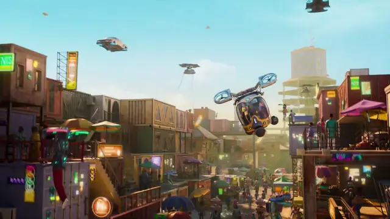

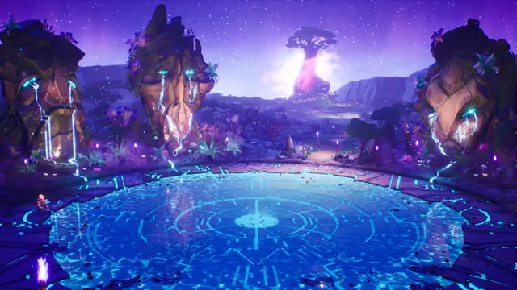

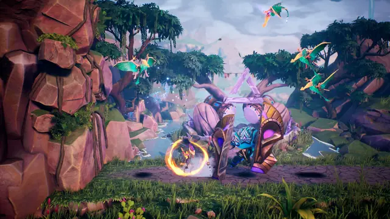

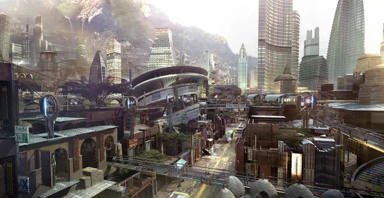

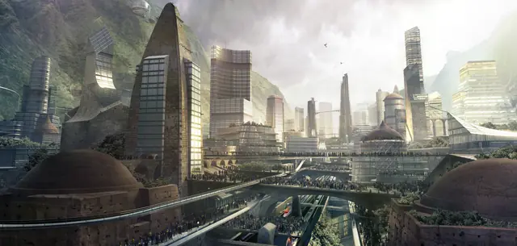

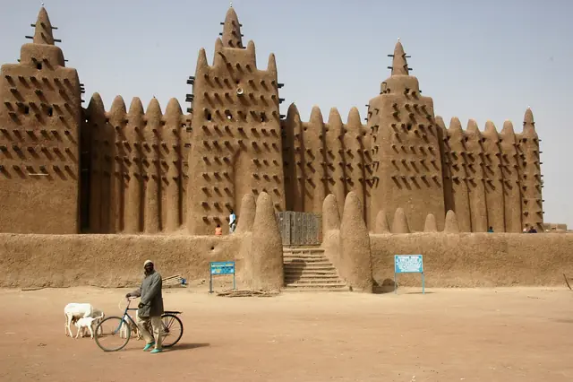

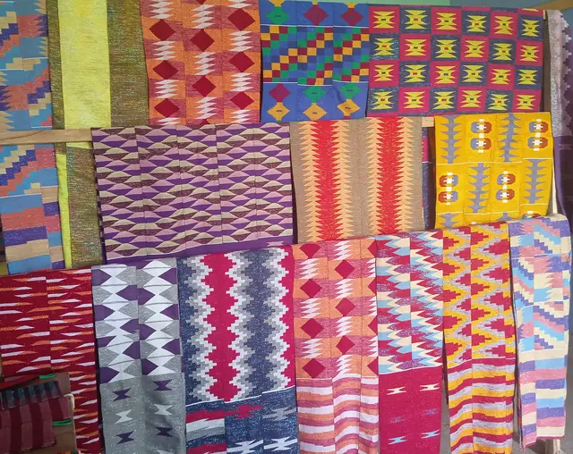

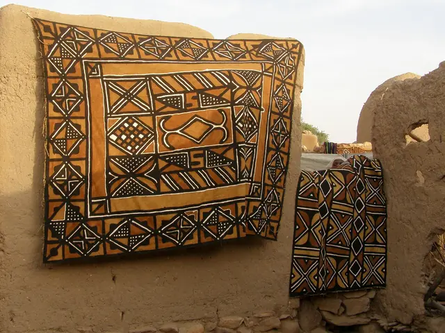

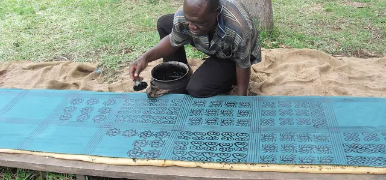

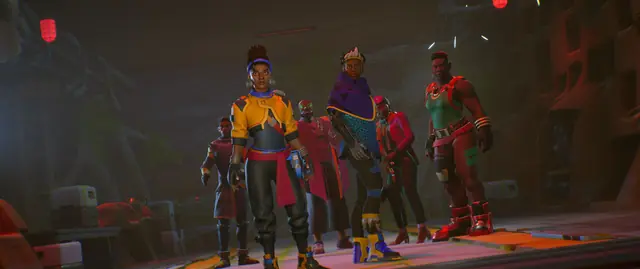

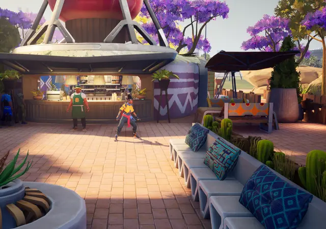
Games
- Tales of Kenzera: ZAU
Study its bright colour, taken from Bantu funerals,5 and how each area stands for a different part of grief.21
- Relooted
Study how it imagines parts of Johannesburg in the future, in an Africanfuturist heist that recovers 70 real artefacts from Western museums.11
Film, art and more
- Black Panther
Study Golden City, built from a design bible of about 500 pages,3 and the one saturated colour per tribe.12
- Iwájú
A future Lagos by Kugali and Disney, with an earthy mainland, a pastel island and technology coloured by its owner.18
- Sun Ra's Saturn record covers
Pencil drawings by Sun Ra coloured in marker,9 and later sleeves made by the band with markers and photographs.8
- Mothership Connection
George Clinton's Mothership became a 1970s stage prop that stood for transport to a Black utopia.2
- Before Yesterday We Could Fly
An Afrofuturist period room at The Met, designed by Hannah Beachler with the curator Michelle Commander on the belief that past, present and future are interconnected.1
- Lagoon
Aliens land in Lagos, and the story stays in Nigeria.7
- E.X.O.: The Legend of Wale Williams
A superhero comic set a decade ahead in Lagoon City, modelled on Lagos Island, with a nanosuit against robotic exoskeletal drones.28
- Kizazi Moto: Generation Fire
Compare ten short films by directors and producers from Egypt, Kenya, Nigeria, South Africa, Uganda and Zimbabwe, with advanced technology, aliens, spirits and monsters, down to a herd of cyborg cattle.29
Sources
- 1Before Yesterday We Could Fly: An Afrofuturist Period Room
- 2What Is Afrofuturism?
- 3How the Black Panther Production Designer Rooted the World’s Most Advanced Nation in African Culture
- 4“A Veil Was Broken”: Afrofuturist Ytasha L. Womack on the Work of Science Fiction in the 2020s
- 5Tales of Kenzera: Zau honors a lost father and the transformative power of loss
- 6Africanfuturism Defined
- 7Afrofuturism, Africanfuturism, and the Language of Black Speculative Literature
- 8The DIY Cosmic Cover Art of Sun Ra
- 9Tracing Afrofuturism Pioneer Sun Ra’s Record Designs, from Shoestring-budget Magic Marker to Gold Foil
- 10Tales Of Kenzera: Zau Creator On The Pressures Of Black Storytelling
- 11Relooted
- 12Designing Afrofuturism in Black Panther: Interview with Ruth E. Carter
- 13[AMA] Tales of Kenzera: ZAU - Abubakar Salim
- 14Akan Adinkra Cloths
- 15Akan Kente Cloths
- 16Adinkra: Message and Medium
- 17Bògòlanfini (mineral-dyed cloth), by Gneli Traoré
- 18“Iwájú” Visual Effects Supervisor Marlon West on Bringing Afrofuturism to Animation
- 19Toluwalakin Olowofoyeku, Hamid Ibrahim & Marlon West on Iwájú
- 202018 Rouse Visiting Artist Hannah Beachler on her history-making Oscar nomination
- 21Tales of Kenzera Devs Want to “Tell Different Stories” In Gaming
- 22Man's cloth (kente), Af1934,0307.165
- 23Kente (textile), CIRC.116D-1934
- 24Adinkra cloth, Af1818,1114.23
- 25Mali’s Bogolan, the dye of the earth
- 26Old Towns of Djenné
- 27Production Designer Hannah Beachler on Building Black Panther
- 28Nigeria’s Next Superhero: Roye Okupe On His Afrofuturistic Graphic Novel Series
- 29Peter Ramsey Talks Afro-Futurist ‘Kizazi Moto: Generation Fire’